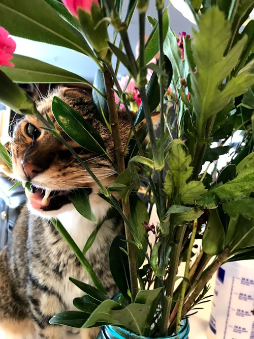
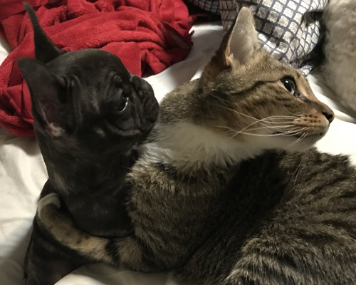

shenanigans
Bucky's Favorite Activities
Bucky’s favorite activities include eating plants. If there is a plant in the house, he will try to eat it. My wife and I have been forced to hide or get rid of any plants that may be harmful to cats since Bucky thinks they are the yummiest. This includes but is not limited to daisies and avocado plants. The photos associated are of plants at my in-laws house that Bucky found to be tasty.
Bucky thinks he is a dog
Bucky grew up in a house of dogs. In his life Bucky has only met two cats. As such he has more dog-like mannerisms. This includes play fighting with the dogs and responding in the most joyful way to being called a good doggy. Notable dogs that Bucky has lived with are a German shepherd, a labradoodle, and a French bulldog. Bucky plays most with the French bulldog (lovingly named hippo). Hippo will flip Bucky all the way over while fighting, and Bucky will cling to his back.
